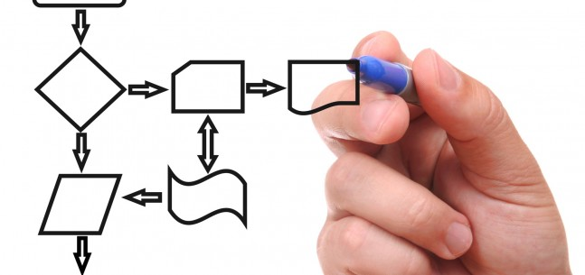
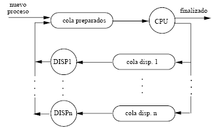
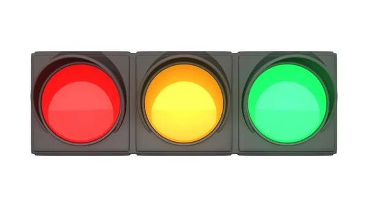

Unidad 2: Administración de Procesos y del Procesador
¿Qué es un Proceso?

Un Proceso es una instancia de un programa en ejecución. Es más que solo el código del programa; un proceso incluye también el estado actual del programa, el uso de la memoria, los recursos asignados y otros datos necesarios para su ejecución.
Elementos de un proceso
-
Código del programa
Texto ejecutable que se está ejecutando.
-
Contador de programa
La posición actual en la secuencia de instrucciones.
-
Registros de CPU
Contienen datos y direcciones.
-
Memoria asignada
Información necesaria para funcionar, como datos en uso o variables.
-
Estado del proceso
Indica si está activo, suspendido, en espera, etc.
Conceptos básicos
Bloqueo de Control de Proceso (BCP)El Bloqueo de Control de Proceso (BCP) es una estructura de datos utilizada por el sistema operativo para almacenar información crítica sobre un proceso en ejecución. Incluye detalles como el estado del proceso, el contador de programa, los registros de CPU, y la memoria asignada, permitiendo al sistema operativo gestionar la planificación y control de procesos de manera eficiente.
Estados
Los Estados son las fases por las que un proceso pasa durante su ciclo de vida. Los principales estados son:
-
Nuevo
El proceso está siendo creado.
-
Listo
El proceso está preparado para ejecutarse cuando la CPU está disponible.
-
En Ejecución
El proceso está sien ejecutado por la CPU.
-
Bloqueado o en Espera
El proceso está esperando a que ocurra un evento externo.
-
Terminado
El proceso ha concluido su ejecución.
Transiciones
Las Transiciones son los cambios de un estado a otro. Estas transiciones son:
-
Nuevo a Listo
Cuando el proceso es creado y está listo para ser ejecutado.
-
Listo a Ejecución
Cuando el proceso toma control de la CPU.
-
Ejecución a Bolqueado
Cuando el proceso necesita esperar por un recurso o evento.
-
Bloqueado a Listo
Cuando el evento que el proceso estaba esperando ocurre, y puede volver a cola de listas.
-
Ejecución a Terminado
Cuando el proceso finaliza su tarea.
¿Qué es un Hilo?
Un Los Hilos o Contextos de ejecución son unidades de ejecución más pequeñas dentro de un proceso. Cada hilo tiene su propio contexto de ejecución, que incluye información como el contador de programa, registros y estado. Sin embargo, los hilos dentro de un mismo proceso comparten recursos como la memoria.
Sincronización entre procesos
Es un mecanismo para cordinar la ejecución de procesos o hilos que comparten recursos, garantizando que no interfieran entre sí. La Sincronización es crucial para evitar problemas como condiciones de carrera. Los mecanismos más comunes son semáforos, monitores y cerrojos.
¿Qué es un Semáforo?
Un Semáforo es una variable utilizada para controlar el acceso a recursos compartidos en entornos de múltiples procesos o hilos. Existen dos tipos de hilos:
-
Semáforo Binario
Solo tiene dos valores, 0 y 1, y se utiliza para indicar si un recurso está disponible o no.
-
Semáforo de Conteo
Permite que un número específico de proceso accedan simultáneamente a un recurso.